/collateral beauty poster.jpg) 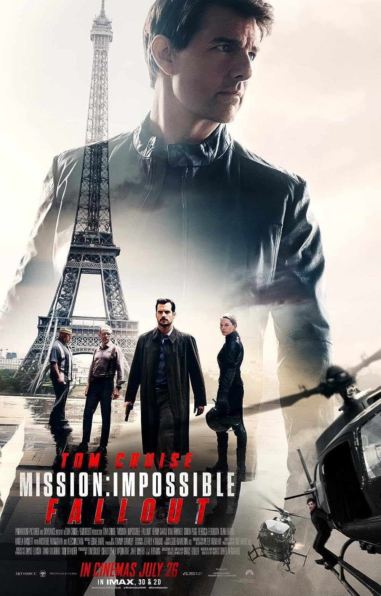
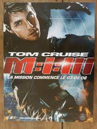
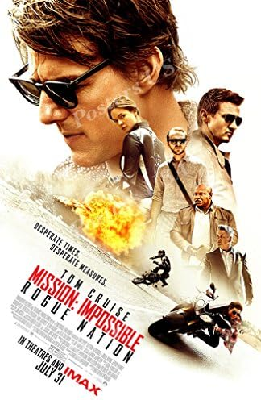
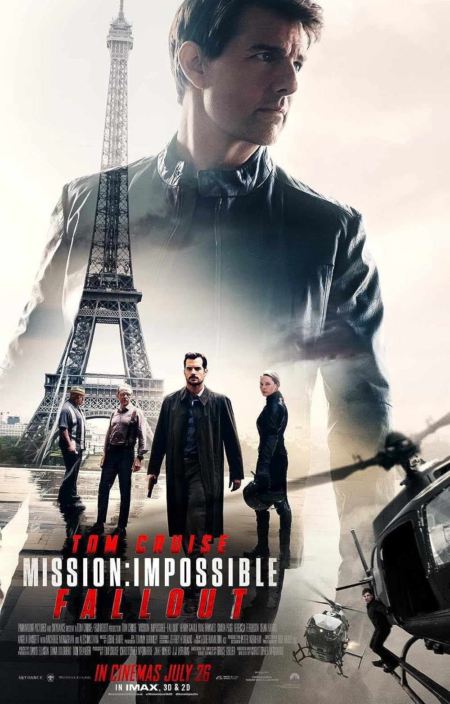
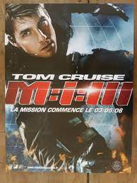
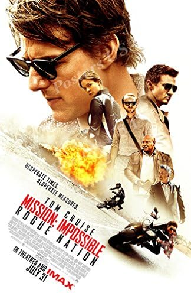
/divergent poster.jpg) 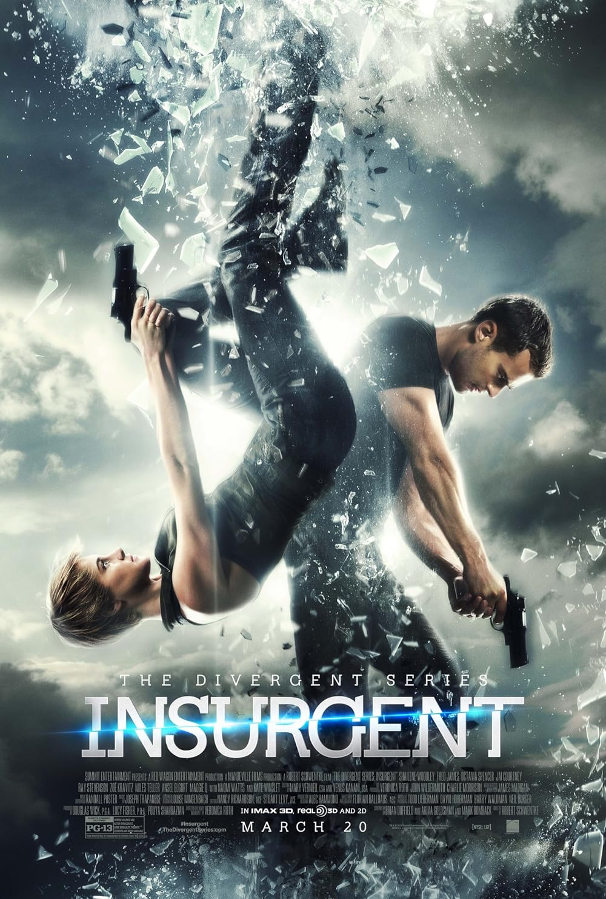
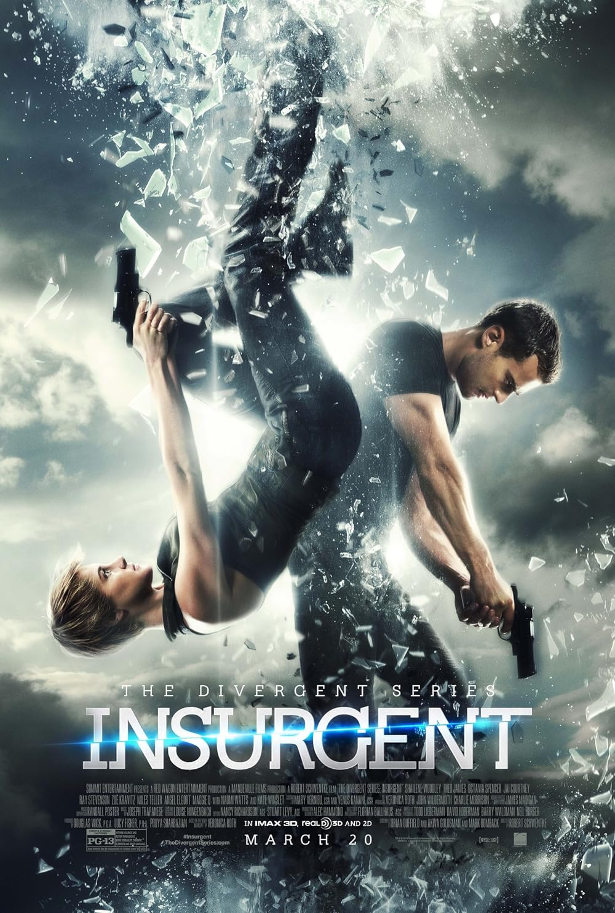
/allegiant poster.jpg) 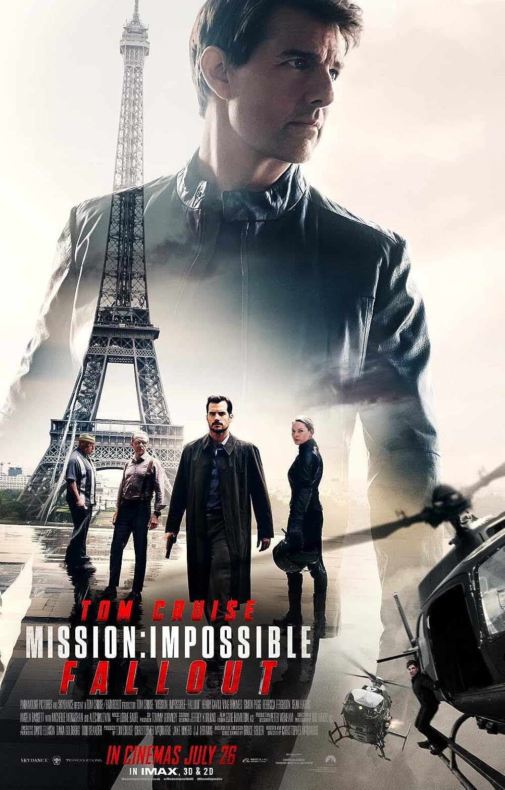
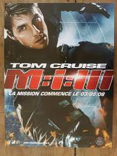
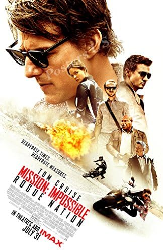
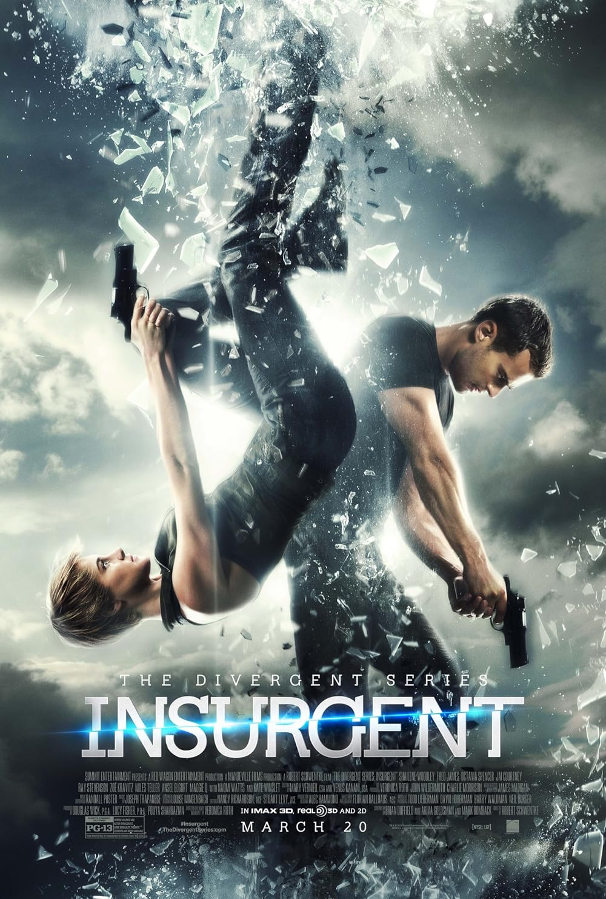
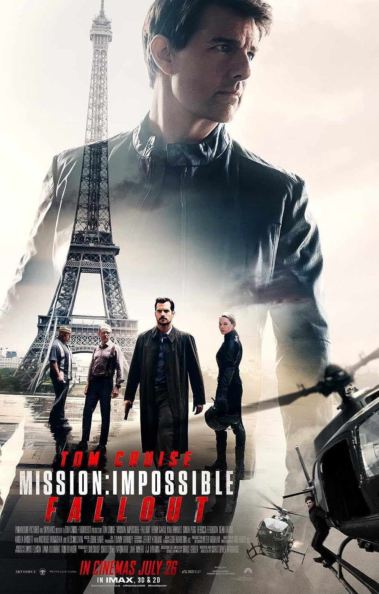
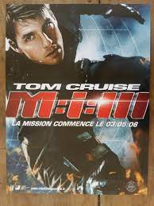
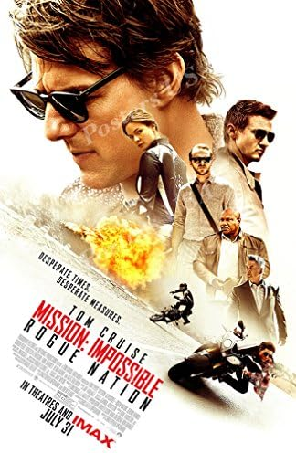
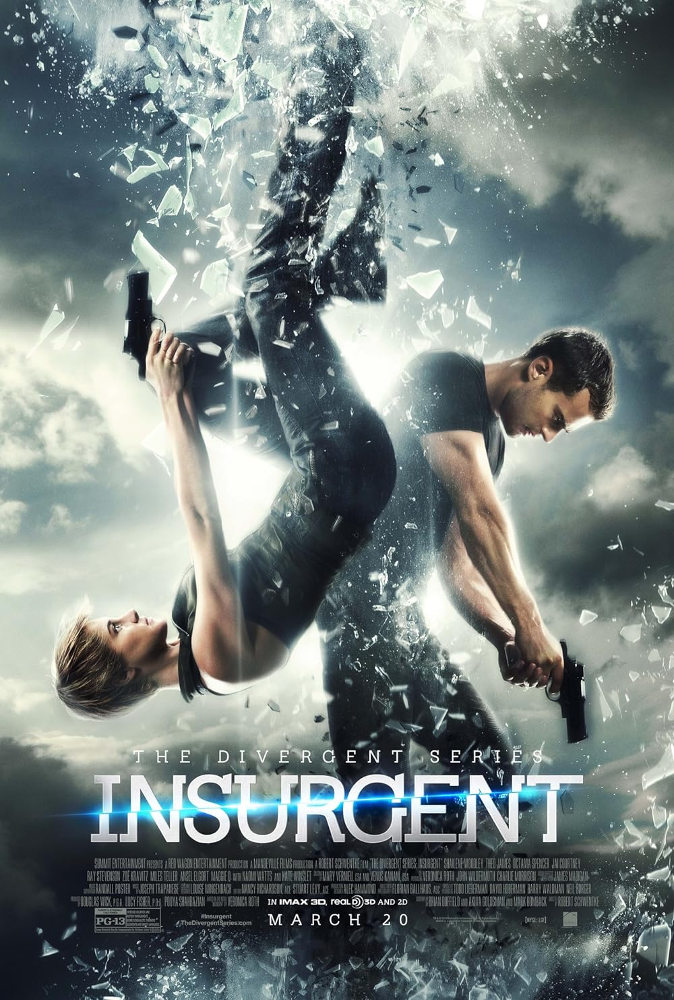
Retreating from life after a tragedy, a divorced man (Will Smith) questions the universe by writing to Love, Time, and Death. Receiving unexpected answers, he begins to see how these things interlock and how even loss can reveal moments of meaning and beauty.
Ethan Hunt is framed for the murder of his IMF team during a botched mission in Prague and accused of selling government secrets to an arms dealer known only as "Max". On the run, Ethan seeks to uncover the real traitor and clear his name.
Divergent is a dark and thrilling young adult sci-fi series from best-selling author Veronica Roth. It's set in a post-apocalyptic Chicago that has separated its population into five Factions, each defined by a given set of values, personality traits, and social affiliations.
Check Out My GitHub!💙